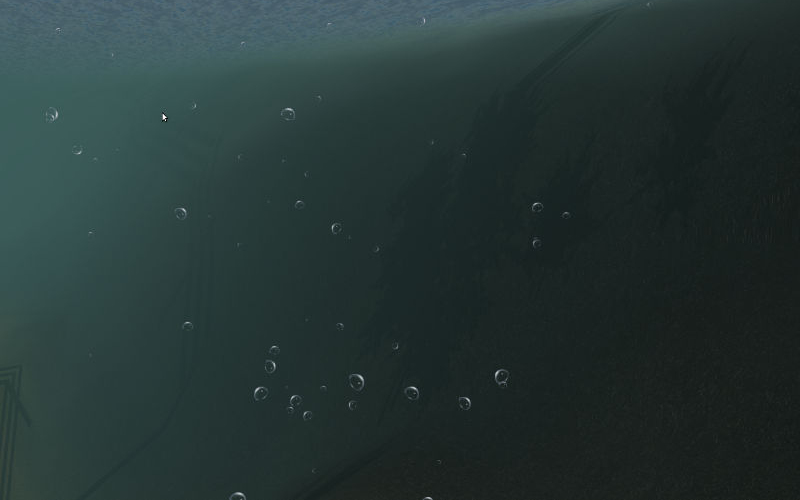
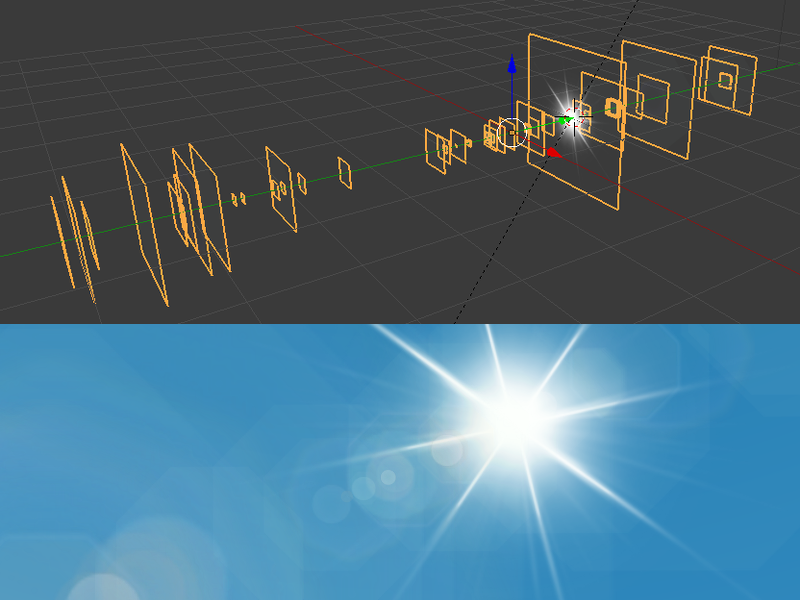
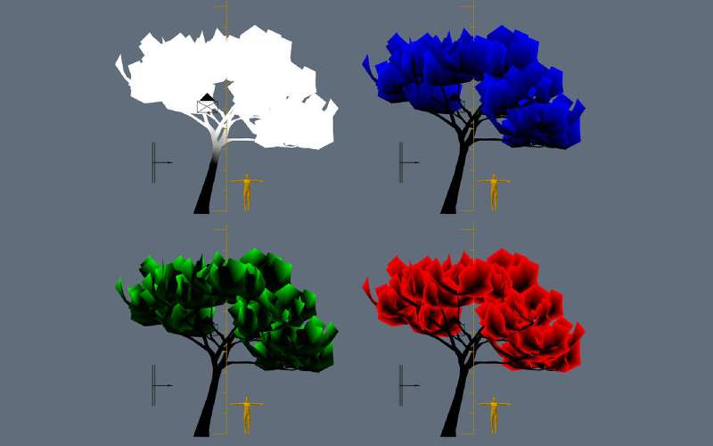

Outdoor Effects¶
Table of Contents
Blend4Web has several environmental effects that can be useful for creating outdoor scenes.
Water¶
Activation¶
For the supposed water material activate the Water panel option under the Material tab.
{kind=link}
Basic Settings¶
- Transparency
- It is recommended to enable the gradient transparency (set the
Transparency > Typeparameter to theAlpha Blendvalue) and to tweak theAlphavalue. - Lighting parameters
- Lighting parameters for the water material can be set up as described in the Lighting Parameters section.
Waves Dynamics¶
Ripples on the water are simulated by normal maps with animated UVs (from 0 up to 4 pieces). For normal map the only shared image is used - the textures differs only by the Mapping > Size parameters. The water mesh must have a UV layer.
Surface Wetting¶
Is carried out automatically. To turn the effect on activate the Wettable option on the needed materials Rendering Options panel.
Reflection and Fresnel Effect¶
For the water material both static and dynamic reflection is supported as well as the Fresnel effect. See the Reflection section.

Shoreline Smoothing¶
The effect affects the water near the shoreline - it becomes more transparent.
- Water > Shore Smoothing
- Enable smoothing.
- Water > Absorb Factor
- This is the light absorption coefficient for water. The higher it is the more transparent the water is. This value can vary from 0 to 100. The default value is 6.
Color Gradient¶
For color gradient the water material must have a texture with the Export Options > Shore Distance Map option enabled. This texture can be generated using the script for baking shoreline parameters.
- Shallow Water > Color
- This sets the color of shallow water. By default, blue (0.008, 0.222, 0.8) is used.
- Shallow Water > Factor
- This sets the mixing factor for the color of shallow water. This value can vary from 0 to 2, and is set to 1 by default.
- Shore Water > Color
- This determines the color of the water just at the shore line. By default, dark blue (0.003, 0.19, 0.57) is used.
- Shore Water > Factor
- This sets the mixing factor for the color of the water just near the shoreline. This value can vary from 0 to 2, and is set to 0.5 by default.
Refraction¶
Under the Render tab in the Reflections and Refractions panel set the Refractions option to ON or AUTO.
{kind=link}
Foam¶
Activation¶
For creating foam add a diffuse texture into the water material slot. Every RGB channel of this image must contain a BW foam texture in it. Then enable the Water Foam panel.
{kind=link}
Setting up the Textures¶
- Water Foam > UV Frequency
- Oscillation frequency of the animated UV coordinates. The default value is (1.0, 1.0).
- Water Foam > UV Magnitude
- Oscillation amplitude of the animated UV coordinates. The default value is (1.0, 1.0).
Setting up the Material¶
- Foam > Factor
- General influence factor for the foam. The default value is 0.5.
Caustics and Chromatic Aberration¶
To create the caustics effect turn on the Caustics option on the water material. Also, there has to be at least one Sun on the scene.
{kind=link}
- Scale
- Cell size for the procedural texture. The default value is 0.25.
- Brightness
- Caustics influence factor. The default value is 0.5.
Underwater Environment¶
{kind=link}
Visibility Settings (“fog”)¶
- Underwater Fog > Color
- Fog color. The default value is (0.4, 0.6, 0.7).
- Underwater Fog > Density
- Exponential factor which affects the density and visibility distance. The default value is 0.06.
The god rays effect settings are also applied.
Note
The Rendering Options > Backface Culling option must be turned off for the correct water surface rendering.
{kind=link}
Volumetric Waves¶
Activation¶
To enable procedural waves the Waves option must be turned on.
Note
The direction of procedural waves is derived from a Wind force field in the scene.
If a scene does not have a Wind force field, procedural waves will only move in the default direction which cannot be changed.
{kind=link}
Setting up¶
- Wave Height
- Wave height can vary from 0 to 5. The default value is 1.0.
- Wave Length
- Wave length can vary from 0.01 to 200. The default value is 10.0.
- Noise Dist Scale 0
- This is the size of the first component of the open water waves. This parameter can vary from 0 to 1. Default value is 0.05.
- Noise Dist Scale 1
- This is the size of the second component of the open water waves. This parameter can vary from 0 to 1. Default value is 0.03.
- Noise Dist Freq 0
- This sets the frequency of the first component of the open water waves. This parameter can vary from 0 to 10. Default value is 1.3.
- Noise Dist Freq 1
- This sets the frequency of the second component of the open water waves. This parameter can vary from 0 to 10 and is set to 1 by default.
- Min Dir Shore Fac
- This is the minimum height decrease coefficient of the shore waves. This parameter can vary from 0 to 1 and is set to 0.4 by default.
- Dir Frequency
- This sets the frequency of the rolling of the shore waves. This parameter can vary from 0 to 10 and is set to 0.5 by default.
- Noise Dir Scale
- This specifies the size of the noise for the shore waves. This parameter can vary from 0 to 1 and is set to 0.05 by default.
- Noise Dir Freq
- This describes the frequency of the noise for the shore waves. This parameter can vary from 0 to 1. Default value is 0.07.
- Min Dir Noise Fac
- This is the noise minimum for the shore waves. This parameter can vary from 0 to 1. Default value is 0.5.
- Min Dist Fac
- This sets the minimum coefficient of mixing open water waves. This parameter can vary from 0 to 1. Default value is 0.2.
- Horizontal Factor
- This coefficient shows how much the shore waves are shifted in the direction of the shoreline. This parameter can vary from 0 to 10. Default value is 5.
Settings for Surface Generation¶
- Generate Mesh
- This enables a generated surface.
- Cascades Number
- This describes the number of cascades on the generated surface. This parameter’s value can vary from 1 to 20. Default value is 5.
- Subdivisions
- This is the number of subdivisions in generated mesh. Default value is 64. The lowest possible value for this parameter is 2, while the highest possible value is 512.
- Detailed Distance
- This specifies the maximum distance from the camera to the edge of the last cascade. The value of this parameter can vary from 1 to 5000. Default value is 1000.
Baking Shoreline Data to Texture¶
On the tools panel (hotkey “T”) under the Blend4Web tab open the Bake Shore Distance Map panel. Set the parameters: maximum distance to shore (Maximum Distance) and the resulting texture size (Texture Size). Select a landscape object (or multiple objects) first, and then - a water object. Click the Bake button.
Depending on the texture size and the number of vertices in the processed meshes the execution time of the script may vary from a fraction of a second up to several minutes. Make sure that the texture named ShoreDistance is created for the water mesh.
Upon script execution some system properties are saved in the water material. Therefore, the scene must be saved after the script has finished working.
Atmosphere¶
Scattering¶
Enable World > Render Sky, then activate Procedural Sky panel under the World tab. Please note, that if a static skydome texture is being used at the same time, it will be replaced.
Note
Also, a procedural sky texture can be used to imitate scattered environment lighting similar to the static skydome texture. To do this, enable the Procedural Sky > Use as Environment Lighting and Environment Lighting > Sky Texture options. If the world texture for environment lighting already exists, it will be replaced.
{kind=link}
Supported settings:
- Procedural Sky > Sky Color
- Base sky color. The default value is (0.087, 0.255, 0.6) (blue).
- Procedural Sky > Rayleigh Brightness
- Rayleigh scattering brightness (i.e. scattering on small particles). The default value is 3.3.
- Procedural Sky > Mie Brightness
- Mie scattering brightness (i.e. scattering on large particles). The default value is 0.1.
- Procedural Sky > Spot Brightness
- Sun spot brightness. The default value is 20.0.
- Procedural Sky > Scatter Strength
- Light scattering factor. The default value is 0.2.
- Procedural Sky > Rayleigh Strength
- Rayleigh scattering factor. The default value is 0.2.
- Procedural Sky > Mie Strength
- Mie scattering factor. The default value is 0.006.
- Procedural Sky > Rayleigh Collection Power
- Rayleigh scattering exponent. The default value is 0.35.
- Procedural Sky > Mie Collection Power
- Mie scattering exponent. The default value is 0.5.
- Procedural Sky > Mie Distribution
- Mie scattering distribution. The default value is 0.4.
Fog¶
The engine supports standard parameters located on the World > Mist panel. Besides this, overriding fog color is possible.
Fog settings are described in the Scene Settings chapter.
When a dynamic skydome is used, the fog color is defined by the sky color.
Time of Day¶
Enable the Dynamic Intensity options for the lamp.
Time of day can be set by applications via API. Particularly time of day can be set using the Lighting interface of the Scene viewer.

{kind=link}
Lens Flare¶

This feature can be enabled by the Lens Flare check-box located in the Rendering Options of the Material panel.
{kind=link}
Note
The effect works only if a Sun type light source is present in the scene.
Lens Flare Object¶
{kind=link}
Lens Flare object is used for the actual rendering of the effect. In essence, such an object consists of several planes with each plane containing one element of the flare. The normal vector of each plane should be pointed in the -Y direction. Every element can slide across the screen in relation to camera rotation with the sole exception being the central plane (bright white “star” on the picture above). This plane serves as a center of the lens flare object and should have a local Y coordinate set to 1.
The placement and spatial orientation of the object itself are not taken into account during rendering.
For lens flare object to work correctly, the Disable Frustum Culling option should be activated.
An example of such object can be seen, for example, in our Island demo.
Material Settings¶
The material used for the lens flare object should have the Alpha Blend transparency type. Alpha parameter should be set to zero.
Node materials are not supported.
Texture Settings¶

An example of texture used to generate Lens Flare effect.
The texture used for the Lens Flare object should contain all elements used to form the shape of the flare in an actual application. The texture image should use Alpha channel and influence both Color and Alpha values.
Wind¶
- Wind strength and direction affect:
- grass and tree leaves animation
- particle system dynamics
- water waves rolling frequency (at the moment only strength is taken into account)
Activation¶
Add a force field object of the Wind type.
Setting up¶
- Direction
- Direction can be set by rotating the force field object.
- Force Fields > Strength
- Wind strength. Located under the
Physicstab. The default value is 1.0.
Animation of Grass and Tree Leaves¶
Authoring resources for grass rendering is described in the Grass section.
Activation¶
Enable the Wind Bending panel for the grass or tree object.
Setting up¶
The interface panel becomes visible after turning on the Wind Bending panel.
{kind=link}
- Main Bending > Angle
- Angle amplitude of the “main” deviation under the influence of wind (in degrees). The default value is 10.0.
- Main Bending > Frequency
- Frequency of the “main” deviation under the influence of wind. The default value is 0.25.
- Main Bending > Main Stiffness (A)
- Text field for specifying the name of the vertex color layer which contains the information about the stiffness of the “main” deviation. Can be left empty.
- Detail Bending > Amplitude
- Angle amplitude of the “detail” deviation caused by the influence of wind (in degrees). The default value is 0.1.
- Detail Bending > Branch Amplitude
- Angle amplitude of the branch deviation caused by the influence of wind (in degrees). The default value is 0.3.
- Detail Bending > Bending Frequency
- Detail bending frequency. The default value is 1.0.
- Detail Bending > Leaves Stiffness (R)
- Text field for specifying the name of the vertex color layer which contains the information about the stiffness of leaves. Can be left empty.
- Detail Bending > Leaves Phase (G)
- Text field for specifying the name of the vertex color layer which contains the information about the phase of leaves deviation. Can be left empty.
- Detail Bending > Overall Stiffness (B)
- Text field for specifying the name of the vertex color layer which contains the information about the overall stiffness of leaves. Can be left empty.
Vertex color layers should be present in the mesh if their names are specified.
{kind=link}